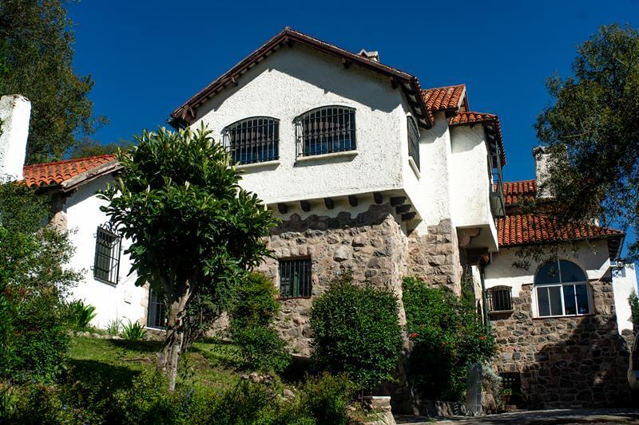

Conocé un poco de nuestra historia
Una Casona con historia real

La Casona fue construida en el año 1926 por el arquitecto francés León Dourge, quien se
enamoró de nuestras sierras, por encargo de Gabriel Masle. Al poco tiempo, Masle murió y
la casa fue vendida a Jorge Osler, que mandó a hacer importantes mejoras, como si
hubiera apostado a ciegas que se convertiría en escenario de la nobleza.
En la época de oro de La cumbre, donde la oligarquía bonaerense tená su residencia de
verano en esta hermosa villa serrana, la única hija mujer de Osner se casó con el
Prícipe Charles de la Tour. En la década del setenta, las familias Oster y de la Tour
pasaban sus veranos en la Casona, dando nombres a las habitaciones que aún hoy
conservan, como Príncipe y Princesa, o Mirador y Sol.